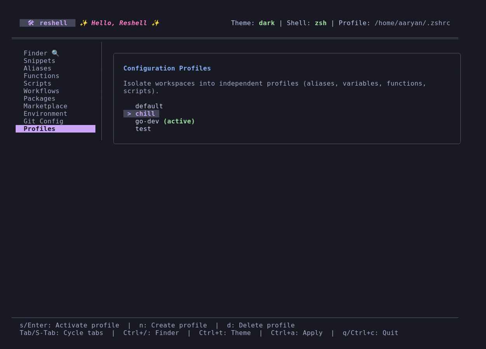

Getting Started
This guide covers requirements, installation, shell profile integration, and import/export commands.
Requirements
- Go: Version 1.22 or higher.
- Operating Systems: Linux, macOS, or Windows (under Unix-compatible environments like WSL, Git Bash, or Cygwin; native CMD/PowerShell are not supported).
- Git: Required for configuration version control and importing marketplace packs.
Installation & Setup
Run via Docker (Sandbox Demo)
For testing or running ReShell in an isolated sandbox without affecting your host system, you can use the pre-built Docker image hosted on GitHub Container Registry:
docker run -it ghcr.io/aaryansinhaa/reshell:latest
Build from Source
Build the binary from the repository root:
go build -o reshell
Initialize the global configuration, install the binary, inject startup hooks, and auto-discover/import configurations:
./reshell setup [directory_path]
The setup command:
- Copy-installs the
reshellexecutable into your local user path (~/.local/bin/), registers path variables, and injects shell hook integrations. - Prompts you for a target profile name (defaults to
default). If the profile does not exist, it will be created. - Auto-discovers and imports configurations:
- Default (No path): Automatically scans default home shell profiles (
~/.bashrc,~/.zshrc,.profile,.bash_aliases,config.fish), your~/.configfolder (excluding cache/tmp/node_modules), global VS Code user snippets, and Pet manager TOML files (pet.toml,snippet.toml). - Specific Path: Recursively scans the provided directory path (highly recommended for dotfiles repositories).
- Prompts you interactively if conflicts are found (e.g., if different alias definitions exist in different files). You can choose to override, keep existing, keep both (by renaming), or skip.
- Automatically detects secrets (e.g., tokens, credentials, AWS keys) and skips them by default to protect your plaintext configuration. (Note: Although
reshell's Git history is purely local, skipping secrets keeps your environment safe).
Active Shell Integration
reshell compiles your configurations and hooks them into your startup profile. Run:
reshell apply
This generates shell-specific script outputs and registers startup hooks:
- Zsh: Adds integration blocks to
~/.zshrcand compiles imports to~/.config/reshell/shell/reshell.sh. - Bash: Adds integration blocks to
~/.bashrcand compiles imports to~/.config/reshell/shell/reshell.sh. - Fish: Adds integration blocks to
~/.config/fish/config.fishand compiles imports to~/.config/reshell/shell/reshell.fish.
Startup Hook Structure
The injected configuration block in your shell profile:
# >>> reshell initialize >>>
if [ -f "$HOME/.config/reshell/shell/reshell.sh" ]; then
. "$HOME/.config/reshell/shell/reshell.sh"
fi
# <<< reshell initialize <<<
To clean all reshell integration blocks and restore your profile files, run:
reshell clean
Configuration Portability (Import & Export)
To prevent configuration drift, you can export and import your workspace configuration as a unified TOML manifest or back up the raw config folder.
Conflict Resolution (Last-Write-Wins Policy)
reshell uses a Last-Write-Wins conflict resolution policy when merging configurations:
- Manifest Imports (
reshell import): Overwrites the existing local configurations with the contents of the imported TOML manifest file. A warning prompt is shown to verify if you trust the source repository before writing custom functions or scripts. - Marketplace Packs (
reshell install): Fetches the configuration pack manifest, presents a summary breakdown of all environment variables, aliases, snippets, custom functions, and library scripts to be installed, warns about running third-party scripts, performs automated secret scanning, and prompts for explicit trust confirmation before merging. Merges are performed item-by-item. If an imported alias, environment variable, or snippet matches an existing local key, the imported value overwrites the local one. - Git Version Control: Since reshell automatically commits all changes under
~/.config/reshell/, you can inspect diffs and resolve conflicts or revert undesired overwrites using standard Git command-line tools.
Exporting Configurations
To export environment variables, aliases, snippets, package lists, and workflows into a single TOML manifest:
reshell export ~/backup-config.toml
Importing Configurations
To import configurations from a manifest and merge them with your current setup:
reshell import ~/backup-config.toml
Once imported, execute reshell apply to compile and source the new configuration.
Syncing with Remote Deployments
To automate environment synchronization across multiple machines without manually exporting and importing manifests, use the sync command:
reshell sync
- First-time Run: The command prompts you to input your remote deployment Git URL (SSH or HTTPS).
- Git Authentication Warning: Since syncing interacts with a remote Git repository, it may require Git authentication. If authentication fails, the Git error will be output to the terminal.
- Programmatic Merging: The engine programmatically fetches remote changes and merges them with your local configurations. In case of conflicts (such as different values for the same alias or env variable), you are presented with options to keep local, override, rename, or skip.
- Git Convergence: Merges are saved locally, committed, and pushed back to the remote repository.
- TUI Synchronization: You can also trigger this sync directly inside the TUI dashboard by navigating to the Marketplace tab and pressing
s.
Dashboard Usage
To launch the interactive configuration editor, run the binary without any subcommands:
reshell
Keyboard Shortcuts
Tab: Navigate forward through sidebar tabs.Shift+Tab: Navigate backward through sidebar tabs.Up / Down(ork / j): Scroll item lists.n: Create a new entry (opens input form).e: Open the selected custom function or script in your default editor ($EDITOR).d: Delete the selected entry.Space: Toggle the active state of an environment variable or alias.c: Copy the selected script snippet to the system clipboard.x: Execute the selected script or workflow.h(inside Git tab): Toggle between global git configuration and local repository version history.rorEnter(inside Git history view): Revert configuration files to the selected revision.Ctrl+A: Runreshell applyto compile and load configurations.qorCtrl+C: Exit the interface.
Multi-Profile Workspaces
reshell supports isolated workspaces through Profiles. Each profile maintains its own custom aliases, snippets, custom function scripts, scripts library, environment variables, workflows, and package lists.

Managing Profiles in TUI
Navigate to the Profiles tab in the TUI dashboard:
sorEnter: Activates the highlighted profile and automatically compiles and updates your shell hooks (reshell apply).n: Prompts you for a name to create and switch to a new profile.d: Deletes the highlighted profile (you cannot delete the active profile).
Managing Profiles in CLI
You can also control profiles directly from the command line:
- List profiles:
bash reshell profile list - Create profile:
bash reshell profile create work - Switch profile:
bash reshell profile switch work - Delete profile:
bash reshell profile delete work
Isolated Version Control Histories
Each configuration profile maintains its own completely isolated Git history:
- Custom profiles store their version histories inside
~/.config/reshell/profiles/<name>/.git/. - The default profile stores its history at the root of
~/.config/reshell/.git/and automatically ignores custom profiles to prevent overlap. - Swapping profiles switches the TUI History panel to show commits specific to that profile only.
Clearing Version History
If you want to discard your profile's version control history and start fresh with a clean initial snapshot:
- TUI Dashboard: Go to the Git tab, toggle History View (using
h), and pressc. - CLI Terminal: Run the following subcommand:
bash reshell git clear